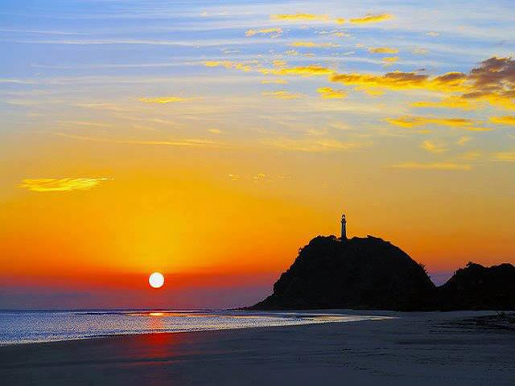
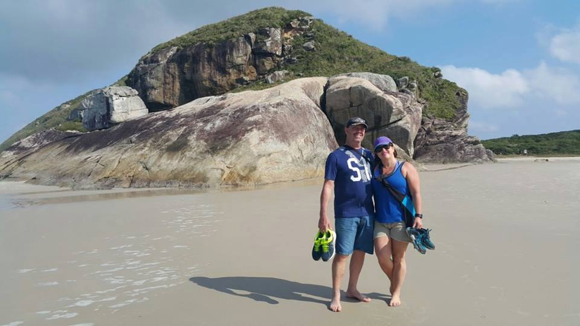
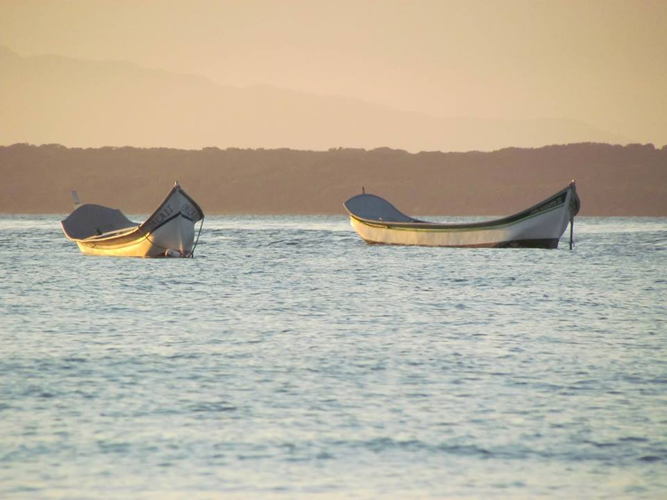

Detalhes do Roteiro
A Ilha do Mel é um dos destinos mais tranquilos e encantadores do litoral do Paraná — e é perfeita para a melhor idade que busca relaxar, curtir a natureza com calma e vivenciar experiências culturais e gastronômicas únicas.
Localizada no litoral do Paraná, é um destino encantador que oferece diversas opções de passeios adaptados para a melhor idade, com foco em conforto e acessibilidade.
Vivencie a maior área preservada da Mata Atlântica ao atravessá-la pela Estrada da Graciosa durante este passeio! A saída de Curitiba será às 07h da manhã, seguindo até Pontal do Paraná, onde acontece o embarque para a Ilha do Mel. A travessia de barco dura cerca de 30 minutos e é emoldurada pelas belas paisagens do litoral paranaense. Na ilha, haverá oportunidade de conhecer os atrativos locais como o Farol das Conchas, a Fortaleza de Nossa Sra. dos Prazeres, além de tempo livre para banho de mar.
Serviços incluídos no pacote:
Translado privativo in/out saindo de Curitiba;
Barco para travessia ida e volta;
Almoço na Ilha do Mel;
Tarifas
| N° de pessoas | Guia bilíngue | Valor por pessoa |
|---|---|---|
| 2 a 8 | Não | R$ 705,00 |
| 2 a 8 | Sim | R$ 775,00 |
Galeria de Fotos


